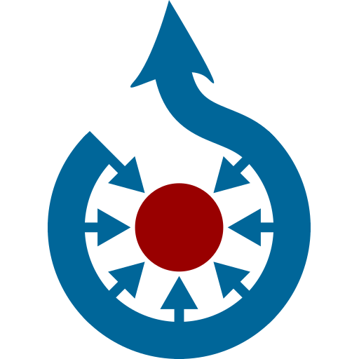
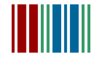
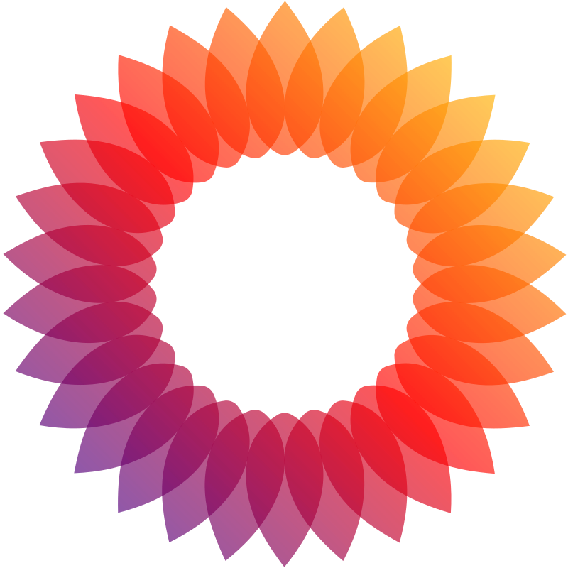

The Free Encyclopedia
English
6 458 000+ articles
日本語
6 458 000+ articles
Русский
6 458 000+ articles
Español
6 458 000+ articles
Deutsch
6 458 000+ articles
Français
6 458 000+ articles
Italiano
6 458 000+ articles
中文
6 458 000+ articles
Portugues
6 458 000+ articles
العربية
6 458 000+ articles

Wikipedia is hosted by the Wikimedia Foundation, a non-profit organization that also hosts a range of other projects.
You can support our work with a donation.
Download Wikipedia for Android or iOS
Save your favorite articles to read offline, sync your reading lists across devices and customize your reading experience with the official Wikipedia app.

CommonsFreely usable photos & more
WikivoyageFree travel guide
WiktionaryFree dictionary
WikibooksFree text books
WikinewsFree news source
WikidataFree knowledge base
WikiversityFree course materials
WikiversityFree course materials
MediaWikiFree & open wiki application
MediaWikiFree & open wiki application
MediaWikiFree & open wiki application